01 / 04 · Manicurista · Katy, Texas
Nails by MelyG
Web con reservas, simulador de manicura y gift cards.
Un trabajo de 10/10
Mely G.
Paula Urbano · Diseñadora y desarrolladora web
Hola, soy Paula
Mira mi portfolio o recórrelo jugando. Si no eliges, entras al portfolio en 5 segundos.
← → para elegir · Enter
Diseño y programo webs que mis clientes pueden gestionar solos.
Paulagotchi
diseño + código
proyectosjugarhablar
Selecciona modo
← → para elegir · Enter para empezar
01 / 04 · Manicurista · Katy, Texas
Web con reservas, simulador de manicura y gift cards.
Un trabajo de 10/10
Mely G.
02 / 04 · Director de videoclips · Sevilla
Su web y el panel para cambiarla sin depender de mí.
03 / 04 · Tienda online · Sevilla
Tema de Shopify desde cero, en seis idiomas.
04 / 04 · Proyecto personal
App para organizar donaciones que funciona sin conexión.
mira lo que hago
Elige un cartucho y mira la web en vivo.
01 / 04
Diseño web / UX/UI / Desarrollo / Reservas online
Web para un estudio de manicura rusa en Katy, Texas. Las clientas prueban colores, formas y acabados en un simulador antes de reservar, ven trabajos reales y compran gift cards. Se abre en español o en inglés según el idioma del teléfono.
El retoDarle a sus clientas una experiencia única que la diferenciara de la competencia: diseñar sus uñas y también su gift card, algo que en Estados Unidos se usa muchísimo.
Ya era suyologo, tipografía, colores y fotosLo hice yoestructura, experiencia, simulador de manicura, reservas, gift cards, diseño de la interfaz y código
Reto 1 de 4
Diseña tu manicura
Entra en la web de Mely y prueba el simulador: elige color, forma y acabado como haría una clienta.
Webs probadas: 0/4
El sistema de su web
Lo que pensé para sus clientas
¡Estoy más que feliz con el resultado de mi página web! Superó todas mis expectativas. Quedó increíble, moderna, elegante y muy interactiva, con movimientos y detalles que la hacen visualmente atractiva y entretenida.
Lo que más me encantó es lo fácil y práctico que resulta para mis clientas reservar sus citas (appointments) y comprar sus gift cards. Todo está diseñado para brindar una experiencia cómoda, rápida y profesional.
Además, quiero destacar la responsabilidad, dedicación y profesionalismo de la persona que hizo realidad este proyecto. Fue un verdadero placer trabajar con ella, siempre atenta a cada detalle y comprometida con lograr un resultado espectacular.
¡La recomiendo al 100 %! Sin duda, un trabajo de 10/10.
Gracias por hacer que Nails by MelyG tenga una página web tan hermosa, funcional y a la vanguardia.
Traducida del español.02 / 04
Diseño web / Panel de administración / Desarrollo
Web para un director de videoclips en Sevilla, con un panel propio para que él gestione videos, fotos, tarifas y reseñas sin depender de mí.
El retoReunir todos sus videoclips en un solo sitio, que la gente lea reseñas y entre en confianza, que conozca las condiciones antes de escribirle por Instagram o WhatsApp y que él no dependa de mí.
Ya era suyologo, tipografía, colores, videos y fotosLo hice yoestructura y experiencia de la web y del panel, diseño de la interfaz y código
Reto 2 de 4
Ordena sus videoclips
Entra en el panel de Kronox y cambia el orden de sus videos con las flechas. Es lo que él hace sin llamarme.
Webs probadas: 0/4
Detalles · pasa el ratón por encima para verlos en la web
El sistema de su web
Antes de escribirle por Instagram o WhatsApp, el cliente acepta las condiciones del rodaje. Así no hay malentendidos.
Él sube videos, cambia precios y aprueba reseñas desde el panel. También desde el celular.
03 / 04
Tienda online / Tema de Shopify / Desarrollo
Tienda de ropa en Sevilla. Diseñé y programé su tema de Shopify desde cero, en seis idiomas, y sigo encargándome de subir los productos nuevos.
El retoUna web que venda a través de Shopify y que sea llamativa e intuitiva.
Ya era suyologo, tipografía y coloresLo hice yoestructura de la tienda, diseño de la interfaz, tema de Shopify en seis idiomas y subida de productos
Reto 3 de 4
Llena la cesta
Entra en la tienda, añade una prenda y mira cómo la cesta se abre a un lado sin sacarte de donde estabas.
Webs probadas: 0/4
Detalles · pasa el ratón por encima para verlos en la web
El sistema de su web
04 / 04
App web / Investigación / UX/UI / Desarrollo
Después de los terremotos en Venezuela hice en una semana una app para organizar donaciones, transporte y voluntarios. Funciona sin conexión, porque en una emergencia la señal falla. No llegó a usarse porque ya había otra herramienta parecida, pero es de lo que más aprendí.
El retoEn plena emergencia: que cargara rápido, que resolviera de verdad el problema y que todo estuviera muy bien organizado.
Ya era suyoun grupo de amigos organizado en Instagram, con su logo, tipografía y coloresLo hice yoinvestigación, estructura, experiencia, diseño de la interfaz y código de la app
Reto 4 de 4
Publica una necesidad
Entra en la app, ve a «Necesidades» y publica una. Si un local cercano la tiene, sale el match.
Webs probadas: 0/4
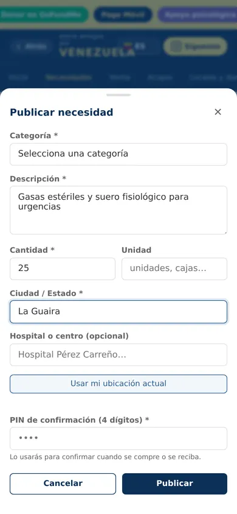
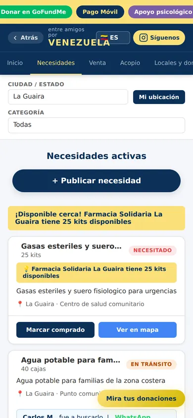
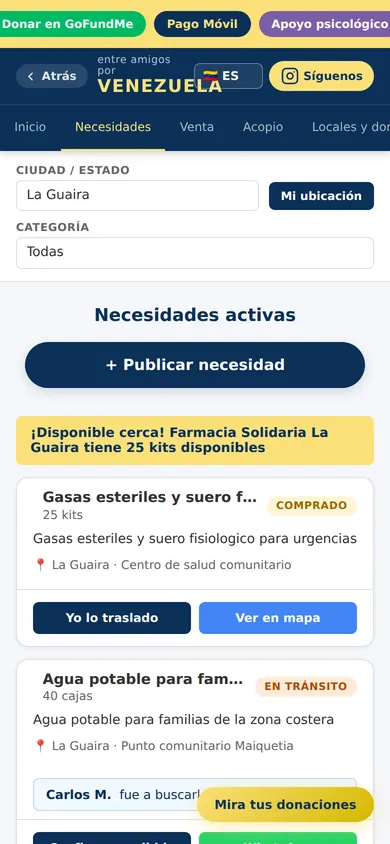
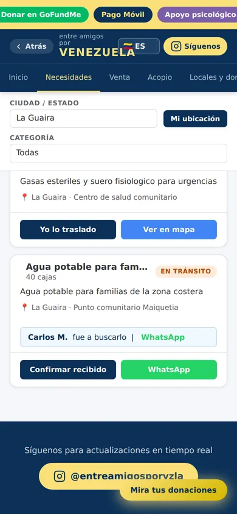
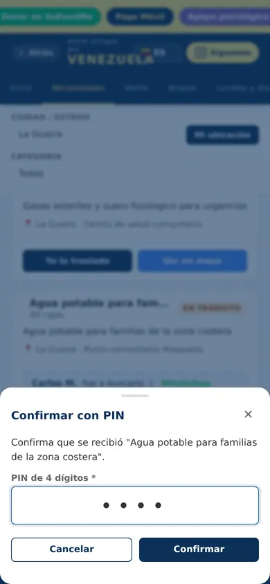
El camino de una ayuda
El sistema de su web
también en
Temas que programé desde cero en la universidad. Quien gestiona la web rellena el panel y la página se actualiza sola. Toca un campo para ver dónde sale.
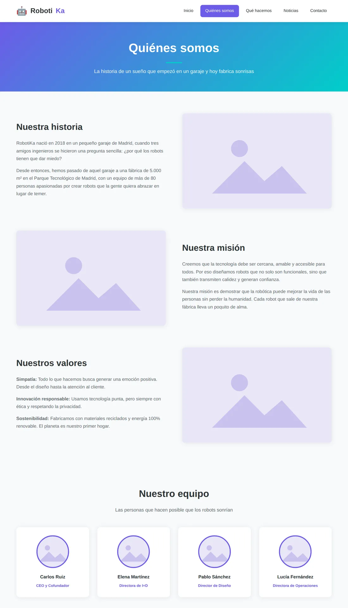
Editar página: Quiénes somos
Proyecto de la uni · Tema propio en PHP · Tipos de contenido personalizados · Campos con ACF
Extra · 3 portfolios
mis favoritos
Webs para tres personas que también crean. Antes de diseñar, miré qué busca cada uno en su sector.
01 · Editor de video
Director y editor de video
Su trabajo ordenado por tipo de pieza y sus herramientas como si fueran su escritorio. Ya está en su propio dominio.
Ver su webPrograma: jairoazogue.com · en vivo

02 · Cámara
Videoclips
Usa la misma base que la web de Kronox, con una estética totalmente distinta.
Ver su web03 · Visor 3D
3D y animación
La hicimos para que pudiera pedir prácticas en estudios de 3D.
Trabajar con Paula ha sido una experiencia increíble. Me encantó el resultado final de mi portfolio, no solo por la calidad técnica y visual, sino porque siento que realmente me representa como persona. Encontrar a alguien capaz de plasmar quién eres y transmitirlo a través de tu presentación profesional es algo muy especial, y Paula lo ha conseguido.
Desde el primer momento, escuchó atentamente mis ideas, recomendaciones, necesidades y deseos, y supo transformarlos en una propuesta creativa que encajaba perfectamente conmigo. La comunicación fue muy fácil y fluida durante todo el proceso. Solo tuve que enviarle los archivos y el briefing inicial, y ella se encargó del resto, aportando su visión creativa y cuidando cada detalle.
Me mantuvo al tanto de los avances en todo momento, compartiendo el progreso y permitiéndome revisar y aprobar cada etapa sobre la marcha. Gracias a esa comunicación constante y a su capacidad para entender lo que buscaba desde el principio, apenas fueron necesarias correcciones.
En definitiva, ha sido un placer colaborar con Paula. Me parece una diseñadora UI/UX excepcional, con una gran sensibilidad para entender a las personas, muchísima creatividad y la flexibilidad necesaria para adaptar cada proyecto a quien hay detrás. La recomendaría sin dudarlo a cualquiera que busque un resultado profesional, cuidado y, sobre todo, auténtico.
Traducida del español.Perspectiva de usuario
(1) Colección | catalina_silva.web
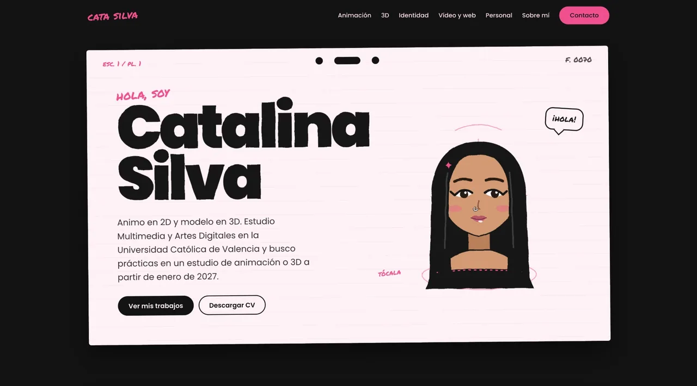
Sin programar todavía
Proyectos de la universidad que viven en Figma, con su prototipo navegable.


y también
Antes de la web viene la marca. Toca cada ficha para darle la vuelta.
Beach club en El Saler. «Vora» significa orilla en valenciano: hice el nombre, el logo, la carta, la señalética y el merch.
Una marca de café con una imagen muy anticuada. La rediseñé para que pareciera un café de especialidad.
Un estudio de diseño digital: la marca, los personajes, la papelería y la web.
sobre mí
Aprendí a programar porque quería que mis diseños salieran de Figma y funcionaran de verdad. Estoy en el último año de Multimedia y Artes Digitales en la UCV y desde 2025 hago webs para clientes reales.
Vivo en Valencia, hablo español e inglés y busco prácticas a partir de enero, con convenio con la universidad.
3 cosas de mí
No puedo caminar sobre césped.
Siempre pido lo mismo en los restaurantes. Un helado de limón. No soy de probar nada nuevo.
Escucho todo tipo de música. Mi Spotify no tiene sentido.
mi Spotify sin sentido
lo que uso
Lo que uso para diseñar y para programar.
Diseño07
Web y desarrollo08
Y también04
¿Usan otra herramienta?
Pregúntame.
Paso 1
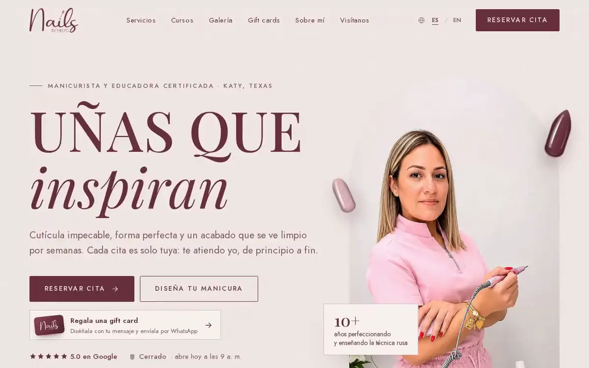
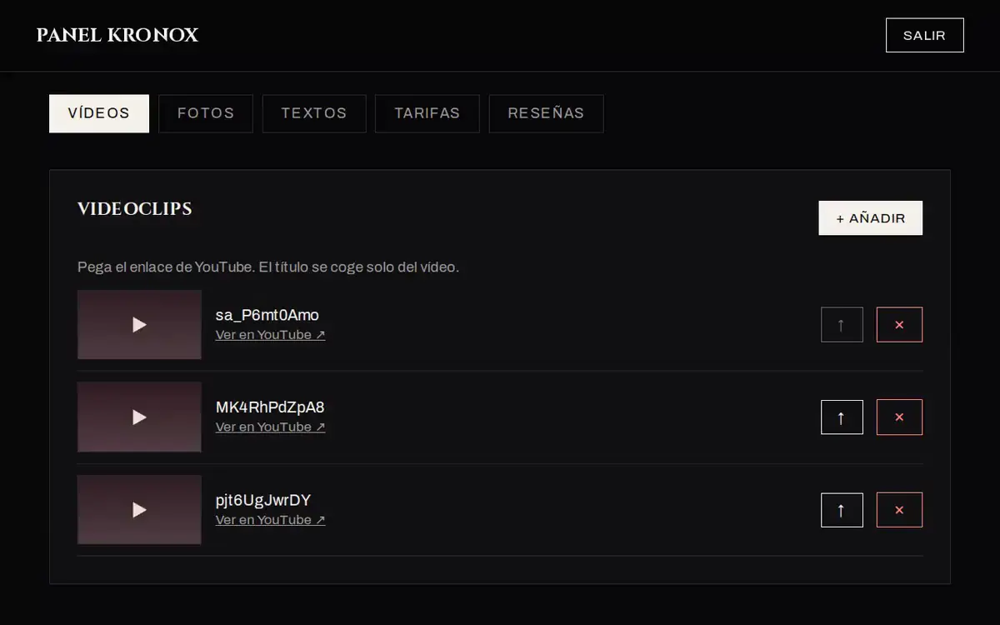
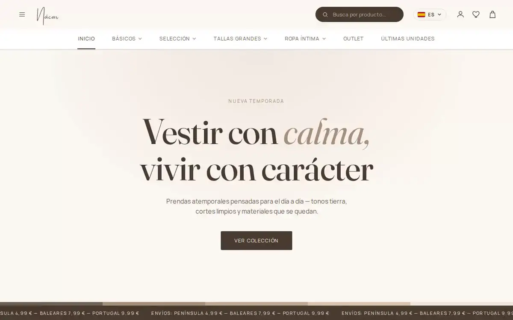
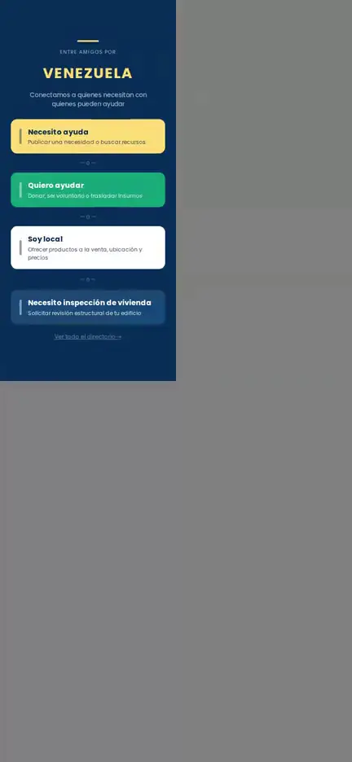
3 cosas de mí
Disponible para empezar ya.
Paula estudianteNivel 1 de 6
0/6
Nivel 1
Nivel completado
1 / 1
Reseña desbloqueada
¡bien hecho!